Unit 10
The s-block elements
The s-block elements

After studying this unit, you will be able to
The s-block elements of the Periodic Table are those in which the last electron enters the outermost s-orbital. As the s-orbital can accommodate only two electrons, two groups (1 & 2) belong to the s-block of the Periodic Table. Group 1 of the Periodic Table consists of the elements: lithium, sodium, potassium, rubidium, caesium and francium. They are collectively known as the alkali metals. These are so called because they form hydroxides on reaction with water which are strongly alkaline in nature. The elements of Group 2 include beryllium, magnesium, calcium, strontium, barium and radium. These elements with the exception of beryllium are commonly known as the alkaline earth metals. These are so called because their oxides and hydroxides are alkaline in nature and these metal oxides are found in the earth’s crust*.
Among the alkali metals sodium and potassium are abundant and lithium, rubidium and caesium have much lower abundances (Table 10.1). Francium is highly radioactive; its longest-lived isotope 223Fr has a half-life of only 21 minutes. Of the alkaline earth metals calcium and magnesium rank fifth and sixth in abundance respectively in the earth’s crust. Strontium and barium have much lower abundances. Beryllium is rare and radium is the rarest of all comprising only 10–10 per cent of igneous rocks† (Table 10.2, page 299).
The general electronic configuration of s-block elements is [noble gas]ns1 for alkali metals and [noble gas] ns2 for alkaline earth metals.
* The thin, rocky outer layer of the Earth is crust. † A type of rock formed from magma (molten rock) that has cooled and hardened.
Lithium and beryllium, the first elements of Group 1 and Group 2 respectively exhibit some properties which are different from those of the other members of the respective group. In these anomalous properties they resemble the second element of the following group. Thus, lithium shows similarities to magnesium and beryllium to aluminium in many of their properties. This type of diagonal similarity is commonly referred to as diagonal relationship in the periodic table. The diagonal relationship is due to the similarity in ionic sizes and /or charge/radius ratio of the elements. Monovalent sodium and potassium ions and divalent magnesium and calcium ions are found in large proportions in biological fluids. These ions perform important biological functions such as maintenance of ion balance and nerve impulse conduction.
10.1 GROUP 1 ELEMENTS: ALKALI METALS
The alkali metals show regular trends in their physical and chemical properties with the increasing atomic number. The atomic, physical and chemical properties of alkali metals are discussed below.
10.1.1 Electronic Configuration
All the alkali metals have one valence electron, ns1 (Table 10.1) outside the noble gas core. The loosely held s-electron in the outermost valence shell of these elements makes them the most electropositive metals. They readily lose electron to give monovalent M+ ions. Hence they are never found in free state in nature.
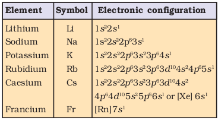
10.1.2 Atomic and Ionic Radii
The alkali metal atoms have the largest sizes in a particular period of the periodic table. With increase in atomic number, the atom becomes larger. The monovalent ions (M+) are smaller than the parent atom. The atomic and ionic radii of alkali metals increase on moving down the group i.e., they increase in size while going from Li to Cs.
10.1.3 Ionization Enthalpy
The ionization enthalpies of the alkali metals are considerably low and decrease down the group from Li to Cs. This is because the effect of increasing size outweighs the increasing nuclear charge, and the outermost electron is very well screened from the nuclear charge.
10.1.4 Hydration Enthalpy
The hydration enthalpies of alkali metal ions decrease with increase in ionic sizes.
Li+> Na+ > K+ > Rb+ > Cs+
Li+ has maximum degree of hydration and for this reason lithium salts are mostly hydrated, e.g., LiCl· 2H2O
10.1.5 Physical Properties
All the alkali metals are silvery white, soft and light metals. Because of the large size, these elements have low density which increases down the group from Li to Cs. However, potassium is lighter than sodium. The melting and boiling points of the alkali metals are low indicating weak metallic bonding due to the presence of only a single valence electron in them. The alkali metals and their salts impart characteristic colour to an oxidizing flame. This is because the heat from the flame excites the outermost orbital electron to a higher energy level. When the excited electron comes back to the ground state, there is emission of radiation in the visible region as given below:
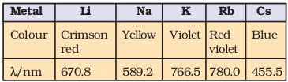
Alkali metals can therefore, be detected by the respective flame tests and can be determined by flame photometry or atomic absorption spectroscopy. These elements when irradiated with light, the light energy absorbed may be sufficient to make an atom lose electron. This property makes caesium and potassium useful as electrodes in photoelectric cells.
Table 10.1 Atomic and Physical Properties of the Alkali Metals
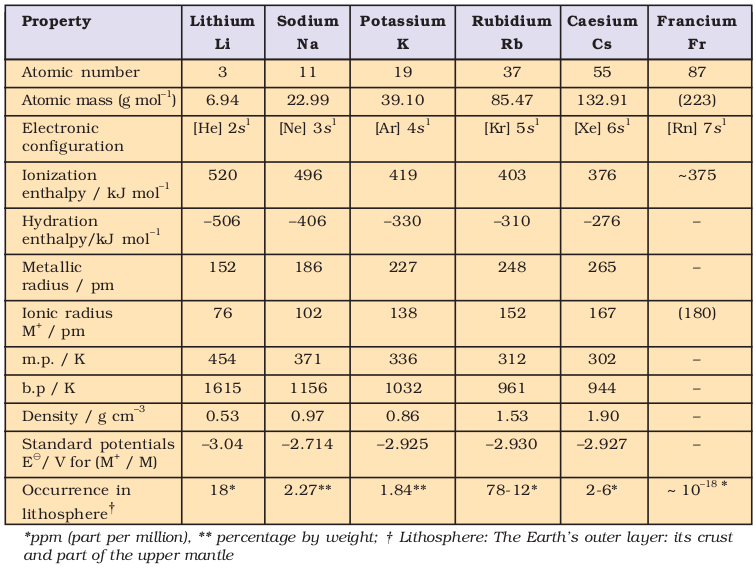
10.1.6 Chemical Properties
The alkali metals are highly reactive due to their large size and low ionization enthalpy. The reactivity of these metals increases down the group.
(i) Reactivity towards air: The alkali metals tarnish in dry air due to the formation of their oxides which in turn react with moisture to form hydroxides. They burn vigorously in oxygen forming oxides. Lithium forms monoxide, sodium forms peroxide, the other metals form superoxides. The superoxide O2– ion is stable only in the presence of large cations such as K, Rb, Cs.
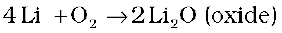

(M = K, Rb, Cs)
In all these oxides the oxidation state of the alkali metal is +1. Lithium shows exceptional behaviour in reacting directly with nitrogen of air to form the nitride, Li3N as well. Because of their high reactivity towards air and water, alkali metals are normally kept in kerosene oil.
Problem 10.1
What is the oxidation state of K in KO2?
Solution
The superoxide species is represented as O2–; since the compound is neutral, therefore, the oxidation state of potassium
is +1.
(ii) Reactivity towards water: The alkali metals react with water to form hydroxide and dihydrogen.
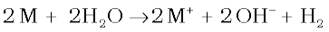
(M = an alkali metal)
It may be noted that although lithium has most negative E value (Table 10.1), its reaction with water is less vigorous than that of sodium which has the least negative E value among the alkali metals. This behaviour of lithium is attributed to its small size and very high hydration energy. Other metals of the group react explosively with water.
They also react with proton donors such as alcohol, gaseous ammonia and alkynes.
(iii) Reactivity towards dihydrogen: The alkali metals react with dihydrogen at about 673K (lithium at 1073K) to form hydrides. All the alkali metal hydrides are ionic solids with high melting points.

(iv) Reactivity towards halogens: The alkali metals readily react vigorously with halogens to form ionic halides, M+X–. However, lithium halides are somewhat covalent. It is because of the high polarisation capability of lithium ion (The distortion of electron cloud of the anion by the cation is called polarisation). The Li+ ion is very small in size and has high tendency to distort electron cloud around the negative halide ion. Since anion with large size can be easily distorted, among halides, lithium iodide is the most covalent in nature.
(v) Reducing nature: The alkali metals are strong reducing agents, lithium being the most and sodium the least powerful (Table 10.1). The standard electrode potential (E) which measures the reducing power represents the overall change :
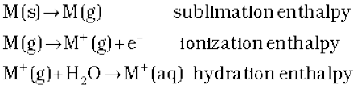
With the small size of its ion, lithium has the highest hydration enthalpy which accounts for its high negative E value and its high reducing power.
Problem 10.2
The E for Cl2/Cl– is +1.36, for I2/I– is +0.53, for Ag+ /Ag is +0.79, Na+ /Na is –2.71 and for Li+ /Li is – 3.04. Arrange the following ionic species in decreasing order of reducing strength:
I–, Ag, Cl–, Li, Na
Solution
The order is Li > Na > I– > Ag > Cl–
(vi) Solutions in liquid ammonia: The alkali metals dissolve in liquid ammonia giving deep blue solutions which are conducting in nature.
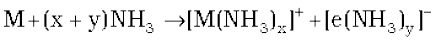
The blue colour of the solution is due to the ammoniated electron which absorbs energy in the visible region of light and thus imparts blue colour to the solution. The solutions are paramagnetic and on standing slowly liberate hydrogen resulting in the formation of amide.
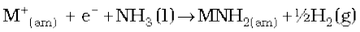
(where ‘am’ denotes solution in ammonia.)
In concentrated solution, the blue colour changes to bronze colour and becomes diamagnetic.
10.1.7 Uses
Lithium metal is used to make useful alloys, for example with lead to make ‘white metal’ bearings for motor engines, with aluminium to make aircraft parts, and with magnesium to make armour plates. It is used in thermonuclear reactions. Lithium is also used to make electrochemical cells. Sodium is used to make a Na/Pb alloy needed to make PbEt4 and PbMe4. These organolead compounds were earlier used as anti-knock additives to petrol, but nowadays vehicles use lead-free petrol. Liquid sodium metal is used as a coolant in fast breeder nuclear reactors. Potassium has a vital role in biological systems. Potassium chloride is used as a fertilizer. Potassium hydroxide is used in the manufacture of soft soap. It is also used as an excellent absorbent of carbon dioxide. Caesium is used in devising photoelectric cells.
10.2 GENERAL CHARACTERISTICS OF THE COMPOUNDS OF THE ALKALI METALS
All the common compounds of the alkali metals are generally ionic in nature. General characteristics of some of their compounds are discussed here.
10.2.1 Oxides and Hydroxides
On combustion in excess of air, lithium forms mainly the oxide, Li2O (plus some peroxide Li2O2), sodium forms the peroxide, Na2O2 (and some superoxide NaO2) whilst potassium, rubidium and caesium form the superoxides, MO2. Under appropriate conditions pure compounds M2O, M2O2 and MO2 may be prepared. The increasing stability of the peroxide or superoxide, as the size of the metal ion increases, is due to the stabilisation of large anions by larger cations through lattice energy effects. These oxides are easily hydrolysed by water to form the hydroxides according to the following reactions :
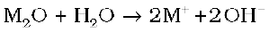
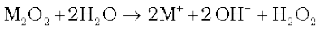
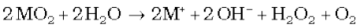
The oxides and the peroxides are colourless when pure, but the superoxides are yellow or orange in colour. The superoxides are also paramagnetic. Sodium peroxide is widely used as an oxidising agent in inorganic chemistry.
Problem 10.3
Why is KO2 paramagnetic ?
Solution
The superoxide O2– is paramagnetic because of one unpaired electron in π*2p molecular orbital.
The hydroxides which are obtained by the reaction of the oxides with water are all white crystalline solids. The alkali metal hydroxides are the strongest of all bases and dissolve freely in water with evolution of much heat on account of intense hydration.
10.2.2 Halides
The alkali metal halides, MX, (X=F,Cl,Br,I) are all high melting, colourless crystalline solids. They can be prepared by the reaction of the appropriate oxide, hydroxide or carbonate with aqueous hydrohalic acid (HX). All of these halides have high negative enthalpies of formation; the ∆f H values for fluorides become less negative as we go down the group, whilst the reverse is true for ∆f H for chlorides, bromides and iodides. For a given metal ∆f H always becomes less negative from fluoride to iodide.
The melting and boiling points always follow the trend: fluoride > chloride > bromide > iodide. All these halides are soluble in water. The low solubility of LiF in water is due to its high lattice enthalpy whereas the low solubility of CsI is due to smaller hydration enthalpy of its two ions. Other halides of lithium are soluble in ethanol, acetone and ethylacetate; LiCl is soluble in pyridine also.
10.2.3 Salts of Oxo-Acids
Oxo-acids are those in which the acidic proton is on a hydroxyl group with an oxo group attached to the same atom e.g., carbonic acid, H2CO3 (OC(OH)2; sulphuric acid, H2SO4 (O2S(OH)2). The alkali metals form salts with all the oxo-acids. They are generally soluble in water and thermally stable. Their carbonates (M2CO3) and in most cases the hydrogencarbonates (MHCO3) also are highly stable to heat. As the electropositive character increases down the group, the stability of the carbonates and hydorgencarbonates increases. Lithium carbonate is not so stable to heat; lithium being very small in size polarises a large CO32– ion leading to the formation of more stable Li2O and CO2. Its hydrogencarbonate does not exist as a solid.
10.3 ANOMALOUS PROPERTIES OF LITHIUM
The anomalous behaviour of lithium is due to the : (i) exceptionally small size of its atom and ion, and (ii) high polarising power (i.e., charge/radius ratio). As a result, there is increased covalent character of lithium compounds which is responsible for their solubility in organic solvents. Further, lithium shows diagonal relationship to magnesium which has been discussed subsequently.
10.3.1 Points of Difference between Lithium and other Alkali Metals
(i) Lithium is much harder. Its m.p. and b.p. are higher than the other alkali metals.
(ii) Lithium is least reactive but the strongest reducing agent among all the alkali metals. On combustion in air it forms mainly monoxide, Li2O and the nitride, Li3N unlike other alkali metals.
(iii) LiCl is deliquescent and crystallises as a hydrate, LiCl.2H2O whereas other alkali metal chlorides do not form hydrates.
(iv) Lithium hydrogencarbonate is not obtained in the solid form while all other elements form solid hydrogencarbonates.
(v) Lithium unlike other alkali metals forms no ethynide on reaction with ethyne.
(vi) Lithium nitrate when heated gives lithium oxide, Li2O, whereas other alkali metal nitrates decompose to give the corresponding nitrite.
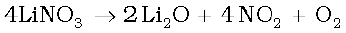
2NaNO3 → 2NaNO2 + O2
(vii) LiF and Li2O are comparatively much less soluble in water than the corresponding compounds of other alkali metals.
10.3.2 Points of Similarities between Lithium and Magnesium
The similarity between lithium and magnesium is particularly striking and arises because of their similar sizes : atomic radii, Li = 152 pm, Mg = 160 pm; ionic radii : Li+ = 76 pm, Mg2+= 72 pm. The main points of similarity are:
(i) Both lithium and magnesium are harder and lighter than other elements in the respective groups.
(ii) Lithium and magnesium react slowly with water. Their oxides and hydroxides are much less soluble and their hydroxides decompose on heating. Both form a nitride, Li3N and Mg3N2, by direct combination with nitrogen.
(iii) The oxides, Li2O and MgO do not combine with excess oxygen to give any superoxide.
(iv) The carbonates of lithium and magnesium decompose easily on heating to
form the oxides and CO2. Solid hydrogencarbonates are not formed by lithium and magnesium.
(v) Both LiCl and MgCl2 are soluble in ethanol.
(vi) Both LiCl and MgCl2 are deliquescent and crystallise from aqueous solution as hydrates, LiCl·2H2O and MgCl2·8H2O.
10.4 SOME IMPORTANT COMPOUNDS OF SODIUM
Industrially important compounds of sodium include sodium carbonate, sodium hydroxide, sodium chloride and sodium bicarbonate. The large scale production of these compounds and their uses are described below:
Sodium Carbonate (Washing Soda), Na2CO3·10H2O
Sodium carbonate is generally prepared by Solvay Process. In this process, advantage is taken of the low solubility of sodium hydrogencarbonate whereby it gets precipitated in the reaction of sodium chloride with ammonium hydrogencarbonate. The latter is prepared by passing CO2 to a concentrated solution of sodium chloride saturated with ammonia, where ammonium carbonate followed by ammonium hydrogencarbonate are formed. The equations for the complete process may be written as :
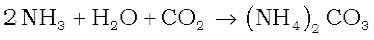
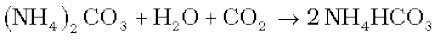
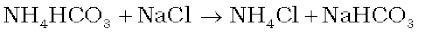
Sodium hydrogencarbonate crystal separates. These are heated to give sodium carbonate.
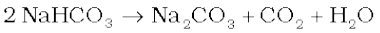
In this process NH3 is recovered when the solution containing NH4Cl is treated with Ca(OH)2. Calcium chloride is obtained as a by-product.
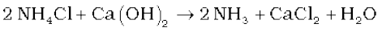
It may be mentioned here that Solvay process cannot be extended to the manufacture of potassium carbonate because potassium hydrogencarbonate is too soluble to be precipitated by the addition of ammonium hydrogencarbonate to a saturated solution of potassium chloride.
Properties : Sodium carbonate is a white crystalline solid which exists as a decahydrate, Na2CO3·10H2O. This is also called washing soda. It is readily soluble in water. On heating, the decahydrate loses its water of crystallisation to form monohydrate. Above 373K, the monohydrate becomes completely anhydrous and changes to a white powder called soda ash.
Na2CO3·10H2O 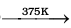 Na2CO3·H2O + 9H2O
Na2CO3·H2O 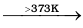 Na2CO3 + H2O
Carbonate part of sodium carbonate gets hydrolysed by water to form an alkaline solution.

Uses:
(i) It is used in water softening, laundering and cleaning.
(ii) It is used in the manufacture of glass, soap, borax and caustic soda.
(iii) It is used in paper, paints and textile industries.
(iv) It is an important laboratory reagent both in qualitative and quantitative analysis.
Sodium Chloride, NaCl
The most abundant source of sodium chloride is sea water which contains 2.7 to 2.9% by mass of the salt. In tropical countries like India, common salt is generally obtained by evaporation of sea water. Approximately 50 lakh tons of salt are produced annually in India by solar evaporation. Crude sodium chloride, generally obtained by crystallisation of brine solution, contains sodium sulphate, calcium sulphate, calcium chloride and magnesium chloride as impurities. Calcium chloride, CaCl2, and magnesium chloride, MgCl2 are impurities because they are deliquescent (absorb moisture easily from the atmosphere). To obtain pure sodium chloride, the crude salt is dissolved in minimum amount of water and filtered to remove insoluble impurities. The solution is then saturated with hydrogen chloride gas. Crystals of pure sodium chloride separate out. Calcium and magnesium chloride, being more soluble than sodium chloride, remain in solution.
Sodium chloride melts at 1081K. It has a solubility of 36.0 g in 100 g of water at 273 K. The solubility does not increase appreciably with increase in temperature.
Uses :
(i) It is used as a common salt or table salt for domestic purpose.
(ii) It is used for the preparation of Na2O2, NaOH and Na2CO3.
Sodium Hydroxide (Caustic Soda), NaOH
Sodium hydroxide is generally prepared commercially by the electrolysis of sodium chloride in Castner-Kellner cell. A brine solution is electrolysed using a mercury cathode and a carbon anode. Sodium metal discharged at the cathode combines with mercury to form sodium amalgam. Chlorine gas is evolved at the anode.

The amalgam is treated with water to give sodium hydroxide and hydrogen gas.
2Na-amalgam + 2H2O2NaOH+ 2Hg +H2
Sodium hydroxide is a white, translucent solid. It melts at 591 K. It is readily soluble in water to give a strong alkaline solution. Crystals of sodium hydroxide are deliquescent. The sodium hydroxide solution at the surface reacts with the CO2 in the atmosphere to form Na2CO3.
Uses: It is used in (i) the manufacture of soap, paper, artificial silk and a number of chemicals, (ii) in petroleum refining, (iii) in the purification of bauxite, (iv) in the textile industries for mercerising cotton fabrics, (v) for the preparation of pure fats and oils, and (vi) as a laboratory reagent.
Sodium Hydrogencarbonate (Baking Soda), NaHCO3
Sodium hydrogencarbonate is known as baking soda because it decomposes on heating to generate bubbles of carbon dioxide (leaving holes in cakes or pastries and making them light and fluffy).
Sodium hydrogencarbonate is made by saturating a solution of sodium carbonate with carbon dioxide. The white crystalline powder of sodium hydrogencarbonate, being less soluble, gets separated out.
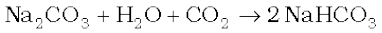
Sodium hydrogencarbonate is a mild antiseptic for skin infections. It is used in fire extinguishers.
10.5 BIOLOGICAL IMPORTANCE OF SODIUM AND POTASSIUM
A typical 70 kg man contains about 90 g of Na and 170 g of K compared with only 5 g of iron and 0.06 g of copper.
Sodium ions are found primarily on the outside of cells, being located in blood plasma and in the interstitial fluid which surrounds the cells. These ions participate in the transmission of nerve signals, in regulating the flow of water across cell membranes and in the transport of sugars and amino acids into cells. Sodium and potassium, although so similar chemically, differ quantitatively in their ability to penetrate cell membranes, in their transport mechanisms and in their efficiency to activate enzymes. Thus, potassium ions are the most abundant cations within cell fluids, where they activate many enzymes, participate in the oxidation of glucose to produce ATP and, with sodium, are responsible for the transmission of nerve signals.
There is a very considerable variation in the concentration of sodium and potassium ions found on the opposite sides of cell membranes. As a typical example, in blood plasma, sodium is present to the extent of 143 mmolL–1, whereas the potassium level is only 5 mmolL–1 within the red blood cells. These concentrations change to 10 mmolL–1 (Na+) and 105 mmolL–1 (K+). These ionic gradients demonstrate that a discriminatory mechanism, called the sodium-potassium pump, operates across the cell membranes which consumes more than one-third of the ATP used by a resting animal and about 15 kg per 24 h in a resting human.
10.6 GROUP 2 ELEMENTS : ALKALINE EARTH METALS
The group 2 elements comprise beryllium, magnesium, calcium, strontium, barium and radium. They follow alkali metals in the periodic table. These (except beryllium) are known as alkaline earth metals. The first element beryllium differs from the rest of the members and shows diagonal relationship to aluminium. The atomic and physical properties of the alkaline earth metals are shown in Table 10.2.
10.6.1 Electronic Configuration
These elements have two electrons in the s -orbital of the valence shell (Table 10.2). Their general electronic configuration may be represented as [noble gas] ns2. Like alkali metals, the compounds of these elements are also predominantly ionic.
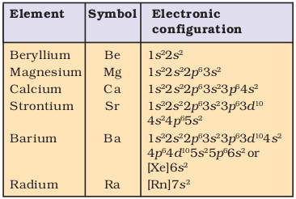
10.6.2 Atomic and Ionic Radii
The atomic and ionic radii of the alkaline earth metals are smaller than those of the corresponding alkali metals in the same periods. This is due to the increased nuclear charge in these elements. Within the group, the atomic and ionic radii increase with increase in atomic number.
Table 10.2 Atomic and Physical Properties of the Alkaline Earth Metals
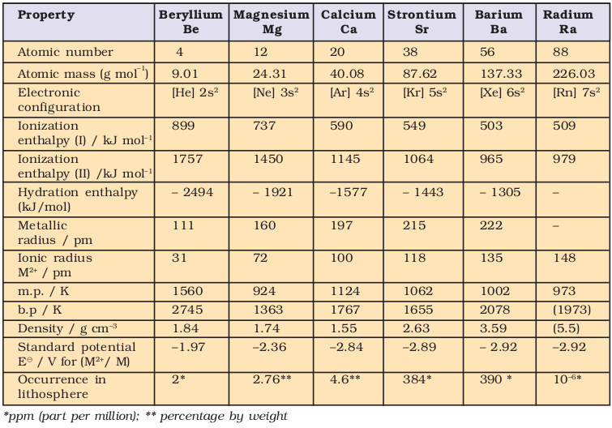
10.6.3 Ionization Enthalpies
The alkaline earth metals have low ionization enthalpies due to fairly large size of the atoms. Since the atomic size increases down the group, their ionization enthalpy decreases (Table 10.2). The first ionisation enthalpies of the alkaline earth metals are higher than those of the corresponding Group 1 metals. This is due to their small size as compared to the corresponding alkali metals. It is interesting to note that the second ionisation enthalpies of the alkaline earth metals are smaller than those of the corresponding alkali metals.
10.6.4 Hydration Enthalpies
Like alkali metal ions, the hydration enthalpies of alkaline earth metal ions decrease with increase in ionic size down the group.
Be2+> Mg2+ > Ca2+ > Sr2+ > Ba2+
The hydration enthalpies of alkaline earth metal ions are larger than those of alkali metal ions. Thus, compounds of alkaline earth metals are more extensively hydrated than those of alkali metals, e.g., MgCl2 and CaCl2 exist as MgCl2.6H2O and CaCl2· 6H2O while NaCl and KCl do not form such hydrates.
10.6.5 Physical Properties
The alkaline earth metals, in general, are silvery white, lustrous and relatively soft but harder than the alkali metals. Beryllium and magnesium appear to be somewhat greyish. The melting and boiling points of these metals are higher than the corresponding alkali metals due to smaller sizes. The trend is, however, not systematic. Because of the low ionisation enthalpies, they are strongly electropositive in nature. The electropositive character increases down the group from Be to Ba. Calcium, strontium and barium impart characteristic brick red, crimson and apple green colours respectively to the flame. In flame the electrons are excited to higher energy levels and when they drop back to the ground state, energy is emitted in the form of visible light. The electrons in beryllium and magnesium are too strongly bound to get excited by flame. Hence, these elements do not impart any colour to the flame. The flame test for Ca, Sr and Ba is helpful in their detection in qualitative analysis and estimation by flame photometry. The alkaline earth metals like those of alkali metals have high electrical and thermal conductivities which are typical characteristics of metals.
10.6.6 Chemical Properties
The alkaline earth metals are less reactive than the alkali metals. The reactivity of these elements increases on going down the group.
(i) Reactivity towards air and water: Beryllium and magnesium are kinetically inert to oxygen and water because of the formation of an oxide film on their surface. However, powdered beryllium burns brilliantly on ignition in air to give BeO and Be3N2. Magnesium is more electropositive and burns with dazzling brilliance in air to give MgO and Mg3N2. Calcium, strontium and barium are readily attacked by air to form the oxide and nitride. They also react with water with increasing vigour even in cold to form hydroxides.
(ii) Reactivity towards the halogens: All the alkaline earth metals combine with halogen at elevated temperatures forming their halides.
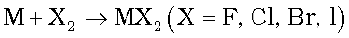
Thermal decomposition of (NH4)2BeF4 is the best route for the preparation of BeF2, and BeCl2 is conveniently made from the oxide.
(iii) Reactivity towards hydrogen: All the elements except beryllium combine with hydrogen upon heating to form their hydrides, MH2.
BeH2, however, can be prepared by the reaction of BeCl2 with LiAlH4.

(iv) Reactivity towards acids: The alkaline earth metals readily react with acids liberating dihydrogen.
M + 2HCl → MCl2 + H2
(v) Reducing nature: Like alkali metals, the alkaline earth metals are strong reducing agents. This is indicated by large negative values of their reduction potentials (Table 10.2). However their reducing power is less than those of their corresponding alkali metals. Beryllium has less negative value compared to other alkaline earth metals. However, its reducing nature is due to large hydration energy associated with the small size of Be2+ ion and relatively large value of the atomization enthalpy of the metal.
(vi) Solutions in liquid ammonia: Like alkali metals, the alkaline earth metals dissolve in liquid ammonia to give deep blue black solutions forming ammoniated ions.
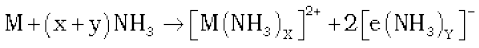
From these solutions, the ammoniates, [M(NH3)6]2+ can be recovered.
10.6.7 Uses
Beryllium is used in the manufacture of alloys. Copper-beryllium alloys are used in the preparation of high strength springs. Metallic beryllium is used for making windows of X-ray tubes. Magnesium forms alloys with aluminium, zinc, manganese and tin. Magnesium-aluminium alloys being light in mass are used in air-craft construction. Magnesium (powder and ribbon) is used in flash powders and bulbs, incendiary bombs and signals. A suspension of magnesium hydroxide in water (called milk of magnesia) is used as antacid in medicine. Magnesium carbonate is an ingredient of toothpaste. Calcium is used in the extraction of metals from oxides which are difficult to reduce with carbon. Calcium and barium metals, owing to their reactivity with oxygen and nitrogen at elevated temperatures, have often been used to remove air from vacuum tubes. Radium salts are used in radiotherapy, for example, in the treatment of cancer.
10.7 GENERAL CHARACTERISTICS OF COMPOUNDS OF THE ALKALINE EARTH METALS
The dipositive oxidation state (M2+) is the predominant valence of Group 2 elements. The alkaline earth metals form compounds which are predominantly ionic but less ionic than the corresponding compounds of alkali metals. This is due to increased nuclear charge and smaller size. The oxides and other compounds of beryllium and magnesium are more covalent than those formed by the heavier and large sized members (Ca, Sr, Ba). The general characteristics of some of the compounds of alkali earth metals are described below.
(i) Oxides and Hydroxides: The alkaline earth metals burn in oxygen to form the monoxide, MO which, except for BeO, have rock-salt structure. The BeO is essentially covalent in nature. The enthalpies of formation of these oxides are quite high and consequently they are very stable to heat. BeO is amphoteric while oxides of other elements are ionic in nature. All these oxides except BeO are basic in nature and react with water to form sparingly soluble hydroxides.
MO + H2O → M(OH)2
The solubility, thermal stability and the basic character of these hydroxides increase with increasing atomic number from Mg(OH)2 to Ba(OH)2. The alkaline earth metal hydroxides are, however, less basic and less stable than alkali metal hydroxides. Beryllium hydroxide is amphoteric in nature as it reacts with acid and alkali both.
Be(OH)2 + 2OH– → [Be(OH)4]2–
Beryllate ion
Be(OH)2 + 2HCl + 2H2O → [Be(OH)4]Cl2
(ii) Halides: Except for beryllium halides, all other halides of alkaline earth metals are ionic in nature. Beryllium halides are essentially covalent and soluble in organic solvents. Beryllium chloride has a chain structure in the solid state as shown below:
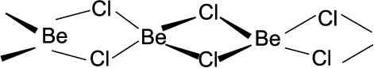
In the vapour phase BeCl2 tends to form a chloro-bridged dimer which dissociates into the linear monomer at high temperatures of the order of 1200 K. The tendency to form halide hydrates gradually decreases (for example, MgCl2·8H2O, CaCl2·6H2O, SrCl2·6H2O and BaCl2·2H2O) down the group. The dehydration of hydrated chlorides, bromides and iodides of Ca, Sr and Ba can be achieved on heating; however, the corresponding hydrated halides of Be and Mg on heating suffer hydrolysis. The fluorides are relatively less soluble than the chlorides owing to their high lattice energies.
(iii) Salts of Oxoacids: The alkaline earth metals also form salts of oxoacids. Some of these are :
Carbonates: Carbonates of alkaline earth metals are insoluble in water and can be precipitated by addition of a sodium or ammonium carbonate solution to a solution of a soluble salt of these metals. The solubility of carbonates in water decreases as the atomic number of the metal ion increases. All the carbonates decompose on heating to give carbon dioxide and the oxide. Beryllium carbonate is unstable and can be kept only in the atmosphere of CO2. The thermal stability increases with increasing cationic size.
Sulphates: The sulphates of the alkaline earth metals are all white solids and stable to heat. BeSO4, and MgSO4 are readily soluble in water; the solubility decreases from CaSO4 to BaSO4. The greater hydration enthalpies of Be2+ and Mg2+ ions overcome the lattice enthalpy factor and therefore their sulphates are soluble in water.
Nitrates: The nitrates are made by dissolution of the carbonates in dilute nitric acid. Magnesium nitrate crystallises with six molecules of water, whereas barium nitrate crystallises as the anhydrous salt. This again shows a decreasing tendency to form hydrates with increasing size and decreasing hydration enthalpy. All of them decompose on heating to give the oxide like lithium nitrate.
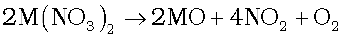
(M = Be, Mg, Ca, Sr, Ba)
Problem 10.4
Why does the solubility of alkaline earth metal hydroxides in water increase down the group?
Solution
Among alkaline earth metal hydroxides, the anion being common the cationic radius will influence the lattice enthalpy. Since lattice enthalpy decreases much more than the hydration enthalpy with increasing ionic size, the solubility increases as we go down the group.
Problem 10.5
Why does the solubility of alkaline earth metal carbonates and sulphates in water decrease down the group?
Solution
The size of anions being much larger compared to cations, the lattice enthalpy will remain almost constant within a particular group. Since the hydration enthalpies decrease down the group, solubility will decrease as found for alkaline earth metal carbonates and sulphates.
10.8 ANOMALOUS BEHAVIOUR OF BERYLLIUM
Beryllium, the first member of the Group 2 metals, shows anomalous behaviour as compared to magnesium and rest of the members. Further, it shows diagonal relationship to aluminium which is discussed subsequently.
(i) Beryllium has exceptionally small atomic and ionic sizes and thus does not compare well with other members of the group. Because of high ionisation enthalpy and small size it forms compounds which are largely covalent and get easily hydrolysed.
(ii) Beryllium does not exhibit coordination number more than four as in its valence shell there are only four orbitals. The remaining members of the group can have a coordination number of six by making use of d-orbitals.
(iii) The oxide and hydroxide of beryllium, unlike the hydroxides of other elements in the group, are amphoteric in nature.
10.8.1 Diagonal Relationship between Beryllium and Aluminium
The ionic radius of Be2+ is estimated to be 31 pm; the charge/radius ratio is nearly the same as that of the Al3+ ion. Hence beryllium resembles aluminium in some ways. Some of the similarities are:
(i) Like aluminium, beryllium is not readily attacked by acids because of the presence of an oxide film on the surface of the metal.
(ii) Beryllium hydroxide dissolves in excess of alkali to give a beryllate ion, [Be(OH)4]2– just as aluminium hydroxide gives aluminate ion, [Al(OH)4]–.
(iii) The chlorides of both beryllium and aluminium have Cl– bridged chloride structure in vapour phase. Both the chlorides are soluble in organic solvents and are strong Lewis acids. They are used as Friedel Craft catalysts.
(iv) Beryllium and aluminium ions have strong tendency to form complexes, BeF42–, AlF63–.
10.9 Some Important Compounds of Calcium
Important compounds of calcium are calcium oxide, calcium hydroxide, calcium sulphate, calcium carbonate and cement. These are industrially important compounds. The large scale preparation of these compounds and their uses are described below.
Calcium Oxide or Quick Lime, CaO
It is prepared on a commercial scale by heating limestone (CaCO3) in a rotary kiln at 1070-1270 K.
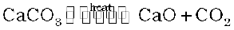
The carbon dioxide is removed as soon as it is produced to enable the reaction to proceed to completion.
Calcium oxide is a white amorphous solid. It has a melting point of 2870 K. On exposure to atmosphere, it absorbs moisture and carbon dioxide.
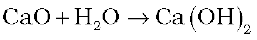

The addition of limited amount of water breaks the lump of lime. This process is called slaking of lime. Quick lime slaked with soda gives solid sodalime. Being a basic oxide, it combines with acidic oxides at high temperature.

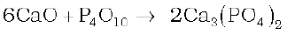
Uses:
(i) It is an important primary material for manufacturing cement and is the cheapest form of alkali.
(ii) It is used in the manufacture of sodium carbonate from caustic soda.
(iii) It is employed in the purification of sugar and in the manufacture of dye stuffs.
Calcium Hydroxide (Slaked lime), Ca(OH)2
Calcium hydroxide is prepared by adding water to quick lime, CaO.
It is a white amorphous powder. It is sparingly soluble in water. The aqueous solution is known as lime water and a suspension of slaked lime in water is known as milk of lime.
When carbon dioxide is passed through lime water it turns milky due to the formation of calcium carbonate.
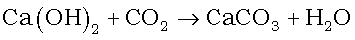
On passing excess of carbon dioxide, the precipitate dissolves to form calcium hydrogencarbonate.
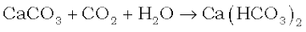
Milk of lime reacts with chlorine to form hypochlorite, a constituent of bleaching powder.
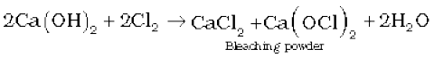
Uses:
(i) It is used in the preparation of mortar, a building material.
(ii) It is used in white wash due to its disinfectant nature.
(iii) It is used in glass making, in tanning industry, for the preparation of bleaching powder and for purification of sugar.
Calcium Carbonate, CaCO3
Calcium carbonate occurs in nature in several forms like limestone, chalk, marble etc. It can be prepared by passing carbon dioxide through slaked lime or by the addition of sodium carbonate to calcium chloride.


Excess of carbon dioxide should be avoided since this leads to the formation of water soluble calcium hydrogencarbonate.
Calcium carbonate is a white fluffy powder. It is almost insoluble in water. When heated to 1200 K, it decomposes to evolve carbon dioxide.

It reacts with dilute acid to liberate carbon dioxide.
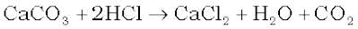
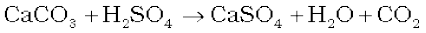
Uses:
It is used as a building material in the form of marble and in the manufacture of quick lime. Calcium carbonate along with magnesium carbonate is used as a flux in the extraction of metals such as iron. Specially precipitated CaCO3 is extensively used in the manufacture of high quality paper. It is also used as an antacid, mild abrasive in tooth paste, a constituent of chewing gum, and a filler in cosmetics.
Calcium Sulphate (Plaster of Paris), CaSO4·½ H2O
It is a hemihydrate of calcium sulphate. It is obtained when gypsum, CaSO4·2H2O, is heated to 393 K.
Above 393 K, no water of crystallisation is left and anhydrous calcium sulphate, CaSO4 is formed. This is known as ‘dead burnt plaster’.
It has a remarkable property of setting with water. On mixing with an adequate quantity of water it forms a plastic mass that gets into a hard solid in 5 to 15 minutes.
Uses:
The largest use of Plaster of Paris is in the building industry as well as plasters. It is used for immoblising the affected part of organ where there is a bone fracture or sprain. It is also employed in dentistry, in ornamental work and for making casts of statues and busts.
Cement: Cement is an important building material. It was first introduced in England in 1824 by Joseph Aspdin. It is also called Portland cement because it resembles with the natural limestone quarried in the Isle of Portland, England.
Cement is a product obtained by combining a material rich in lime, CaO with other material such as clay which contains silica, SiO2 along with the oxides of aluminium, iron and magnesium. The average composition of Portland cement is : CaO, 50-60%; SiO2, 20-25%; Al2O3, 5-10%; MgO, 2-3%; Fe2O3, 1-2% and SO3, 1-2%. For a good quality cement, the ratio of silica (SiO2) to alumina (Al2O3) should be between 2.5 and 4 and the ratio of lime (CaO) to the total of the oxides of silicon (SiO2) aluminium (Al2O3) and iron (Fe2O3) should be as close as possible to 2.
The raw materials for the manufacture of cement are limestone and clay. When clay and lime are strongly heated together they fuse and react to form ‘cement clinker’. This clinker is mixed with 2-3% by weight of gypsum (CaSO4·2H2O) to form cement. Thus important ingredients present in Portland cement are dicalcium silicate (Ca2SiO4) 26%, tricalcium silicate (Ca3SiO5) 51% and tricalcium aluminate (Ca3Al2O6) 11%.
Setting of Cement: When mixed with water, the setting of cement takes place to give a hard mass. This is due to the hydration of the molecules of the constituents and their rearrangement. The purpose of adding gypsum is only to slow down the process of setting of the cement so that it gets sufficiently hardened.
Uses: Cement has become a commodity of national necessity for any country next to iron and steel. It is used in concrete and reinforced concrete, in plastering and in the construction of bridges, dams and buildings.
10.10 BIOLOGICAL IMPORTANCE OF MAGNESIUM AND CALCIUM
An adult body contains about 25 g of Mg and 1200 g of Ca compared with only 5 g of iron and 0.06 g of copper. The daily requirement in the human body has been estimated to be 200 – 300 mg.
All enzymes that utilise ATP in phosphate transfer require magnesium as the cofactor. The main pigment for the absorption of light in plants is chlorophyll which contains magnesium. About 99 % of body calcium is present in bones and teeth. It also plays important roles in neuromuscular function, interneuronal transmission, cell membrane integrity and blood coagulation. The calcium concentration in plasma is regulated at about 100 mgL–1. It is maintained by two hormones: calcitonin and parathyroid hormone. Do you know that bone is not an inert and unchanging substance but is continuously being solubilised and redeposited to the extent of 400 mg per day in man? All this calcium passes through the plasma.
SUMMARY
The s-Block of the periodic table constitutes Group1 (alkali metals) and Group 2 (alkaline earth metals). They are so called because their oxides and hydroxides are alkaline in nature. The alkali metals are characterised by one s-electron and the alkaline earth metals by two s-electrons in the valence shell of their atoms. These are highly reactive metals forming monopositive (M+) and dipositve (M2+) ions respectively.
There is a regular trend in the physical and chemical properties of the alkali metal with increasing atomic numbers. The atomic and ionicsizes increase and the ionization enthalpies decrease systematically down the group. Somewhat similar trends are observed among the properties of the alkaline earth metals.
The first element in each of these groups, lithium in Group 1 and beryllium in Group 2 shows similarities in properties to the second member of the next group. Such similarities are termed as the‘diagonal relationship’ in the periodic table. As such these elements are anomalous as far as their group characteristics are concerned.
The alkali metals are silvery white, soft and low melting. They are highly reactive. The compounds of alkali metals are predominantly ionic. Their oxides and hydroxides are soluble in water forming strong alkalies. Important compounds of sodium includes sodium carbonate, sodium chloride, sodium hydroxide and sodium hydrogencarbonate. Sodium hydroxide is manufactured by Castner-Kellner process and sodium carbonate by Solvay process.
The chemistry of alkaline earth metals is very much like that of the alkali metals. However, some differences arise because of reduced atomic and ionic sizes and increased cationic charges in case of alkaline earth metals. Their oxides and hydroxides are less basic than the alkali metal oxides and hydroxides. Industrially important compounds of calcium include calcium oxide (lime), calcium hydroxide (slaked lime), calcium sulphate (Plaster of Paris), calcium carbonate (limestone) and cement. Portland cement is an important constructional material. It is manufactured by heating a pulverised mixture of limestone and clay in a rotary kiln. The clinker thus obtained is mixed with some gypsum (2-3%) to give a fine powder of cement. All these substances find variety of uses in different areas.
Monovalent sodium and potassium ions and divalent magnesium and calcium ions are found in large proportions in biological fluids. These ions perform important biological functions such as maintenance of ion balance and nerve impulse conduction.
EXERCISES
10.1 What are the common physical and chemical features of alkali metals ?
10.2 Discuss the general characteristics and gradation in properties of alkaline earth metals.
10.3 Why are alkali metals not found in nature ?
10.4 Find out the oxidation state of sodium in Na2O2.
10.5 Explain why is sodium less reactive than potassium.
10.6 Compare the alkali metals and alkaline earth metals with respect to (i) ionisation enthalpy (ii) basicity of oxides and (iii) solubility of hydroxides.
10.7 In what ways lithium shows similarities to magnesium in its chemical behaviour?
10.8 Explain why can alkali and alkaline earth metals not be obtained by chemical reduction methods?
10.9 Why are potassium and caesium, rather than lithium used in photoelectric cells?
10.10 When an alkali metal dissolves in liquid ammonia the solution can acquire different colours. Explain the reasons for this type of colour change.
10.11 Beryllium and magnesium do not give colour to flame whereas other alkaline earth metals do so. Why ?
10.12 Discuss the various reactions that occur in the Solvay process.
10.13 Potassium carbonate cannot be prepared by Solvay process. Why ?
10.14 Why is Li2CO3 decomposed at a lower temperature whereas Na2CO3 at higher temperature?
10.15 Compare the solubility and thermal stability of the following compounds of the alkali metals with those of the alkaline earth metals. (a) Nitrates (b) Carbonates (c) Sulphates.
10.16 Starting with sodium chloride how would you proceed to prepare (i) sodium metal (ii) sodium hydroxide (iii) sodium peroxide (iv) sodium carbonate ?
10.17 What happens when (i) magnesium is burnt in air (ii) quick lime is heated with silica (iii) chlorine reacts with slaked lime (iv) calcium nitrate is heated ?
10.18 Describe two important uses of each of the following : (i) caustic soda (ii) sodium carbonate (iii) quicklime.
10.19 Draw the structure of (i) BeCl2 (vapour) (ii) BeCl2 (solid).
10.20 The hydroxides and carbonates of sodium and potassium are easily soluble in water while the corresponding salts of magnesium and calcium are sparingly soluble in water. Explain.
10.21 Describe the importance of the following : (i) limestone (ii) cement (iii) plaster of paris.
10.22 Why are lithium salts commonly hydrated and those of the other alkali ions usually anhydrous?
10.23 Why is LiF almost insoluble in water whereas LiCl soluble not only in water but also in acetone ?
10.24 Explain the significance of sodium, potassium, magnesium and calcium in biological fluids.
10.25 What happens when
(i) sodium metal is dropped in water ?
(ii) sodium metal is heated in free supply of air ?
(iii) sodium peroxide dissolves in water ?
10.26 Comment on each of the following observations:
(a) The mobilities of the alkali metal ions in aqueous solution are Li+ < Na+ < K+ < Rb+ < Cs+
(b) Lithium is the only alkali metal to form a nitride directly.
(c) E for M2+ (aq) + 2e– → M(s) (where M = Ca, Sr or Ba) is nearly constant.
10.27 State as to why
(a) a solution of Na2CO3 is alkaline ?
(b) alkali metals are prepared by electrolysis of their fused chlorides ?
(c) sodium is found to be more useful than potassium ?
10.28 Write balanced equations for reactions between
(a) Na2O2 and water
(b) KO2 and water
(c) Na2O and CO2.
10.29 How would you explain the following observations?
(i) BeO is almost insoluble but BeSO4 is soluble in water,
(ii) BaO is soluble but BaSO4 is insoluble in water,
(iii) LiI is more soluble than KI in ethanol.
10.30 Which of the alkali metal is having least melting point ?
(a) Na (b) K (c) Rb (d) Cs
10.31 Which one of the following alkali metals gives hydrated salts ?
(a) Li (b) Na (c) K (d) Cs
10.32 Which one of the alkaline earth metal carbonates is thermally the most stable ?
(a) MgCO3 (b) CaCO3 (c) SrCO3 (d) BaCO3